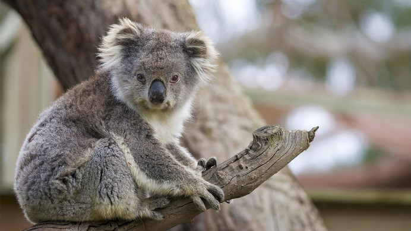

A koala zömök állat, nagy fejjel és megmaradt vagy nem létező farokkal. Testhossza 60–85 cm (24–33 hüvelyk), súlya 4–15 kg (9–33 font), így a legnagyobb fás erszényes állatok közé tartozik. A Victoria-ból származó koalák kétszer nehezebbek, mint a queenslandi koalák. A faj ivarosan dimorf , a hímek 50%-kal nagyobbak, mint a nőstények. A hímeket jobban megkülönbözteti a nőstényektől íveltebb orruk és mellkasi mirigyeik, amelyek szőrtelen foltokként láthatók. Mint a legtöbb erszényes állatnál, a hím koalának is kétágú pénisze van ,a nősténynek pedig két oldalsó hüvelye és két külön méhe van. A hímek péniszhüvelye természetesen előforduló baktériumokat tartalmaz, amelyek fontos szerepet játszanak a megtermékenyítésben. A nőstény zacskónyílását egy záróizom szorítja össze, amely megakadályozza, hogy a fiókák kiessenek. A koala gerince vastagabb és hosszabb a háton, és rövidebb a hasán. A fülek vastag szőrzetűek belül és kívül egyaránt. A hátszőrzet színe világosszürkétől a csokoládébarnáig változik. A has szőrzete fehéres; a faron fehéres foltos, hátul sötétebb. Az erszényes állatok közül a koalának van a leghatékonyabb hátszőrzete, és rendkívül ellenálló a széllel és az esővel szemben, míg a hasi szőr visszaveri a napsugárzást. A koala ívelt, éles karmai jól alkalmazkodnak a fák mászásához. A nagy mellső mancsoknak két egymással ellentétes számjegye van(az első és a második, amelyek szemben állnak a másik hárommal), amelyek lehetővé teszik számukra, hogy megragadják a kis ágakat. A hátsó mancsokon a második és a harmadik számjegy összeolvadt , ami a Diprotodontia tagjainak tipikus állapota, és a hozzátartozó karmokat (amelyek még különállóak) használják az ápoláshoz. Akárcsak az embereknél és más főemlősöknél , a koalák mancsán súrlódó gerincek találhatók. Az állatnak erős csontváza és rövid, izmos felsőteste van, arányosan hosszú felső végtagjaival, amelyek hozzájárulnak mászó- és kapaszkodóképességéhez. További mászóerő érhető el a combizmokkal, amelyek alacsonyabban tapadnak a sípcsonthoz, mint más állatok. A koalának van egy porcos párna a gerince végén, ami kényelmesebbé teheti, amikor egy fa villájában ül.
A koalának van az egyik legkisebb agya a testtömeghez képest az emlősök közül, 60%-kal kisebb, mint egy tipikus diprotodontáé, átlagosan mindössze 19,2 g (0,68 uncia). Az agy felszíne meglehetősen sima, jellemző egy „ primitív ” állatra. A koponyaüregnek csak 61%-át foglalja el, és az agy-gerincvelői folyadék a belső felületéhez nyomja . Ennek a viszonylag nagy mennyiségű folyadéknak a funkciója nem ismert, bár az egyik lehetőség az, hogy lengéscsillapítóként működik, tompítja az agyat, ha az állat leesik a fáról.A koala kis agymérete alkalmazkodás lehet az étrendje által támasztott energiakorlátokhoz, amelyek nem elegendőek egy nagyobb agy fenntartásához. Kicsi agya miatt a koala korlátozottan képes bonyolult, ismeretlen viselkedésekre. Például, ha egy sima felületen letépett levelekkel látják el, az állat nem tud alkalmazkodni a szokásos táplálkozási rutin változásaihoz, és nem eszi meg a leveleket. A koala szaglóérzékei normálisak, és köztudott, hogy az egyes ágak olaját megszagolják, hogy felmérjék azok ehetőségét. Orra meglehetősen nagy, és bőrszerű bőr borítja. Kerek fülei jó hallást biztosítanak számára, és jól fejlett középfülje van.. A koala látása nem elég fejlett, és viszonylag kicsi szemei szokatlanok az erszényes állatok között, mivel a pupillákon függőleges rések vannak. A koalák egy új hangszervet használnak az alacsony hangzású hangok előállításához (lásd alább a közösségi térközt ). A tipikus emlős hangszálakkal ellentétben , amelyek a gége redői, ezek a szervek a velumban ( lágy szájpadlás ) helyezkednek el, és veláris hangszálaknak nevezik. A koala fogai balról jobbra: őrlőfogak , előfogak (sötét), diasztéma, szemfogak, metszőfogak A koalának számos adaptációja van az eukalipta étrendjéhez, amely alacsony tápértékű, magas toxicitású és sok élelmi rostot tartalmaz . Az állat fogazat áll a metszőfogak és arcát fogak (egyetlen kisőrlő fog és négy zápfog mindegyik állkapocs), amelyek egymástól egy nagy különbség (A jellemző növényevő emlősök). A metszőfogak segítségével megragadják a leveleket, amelyeket azután az előfogakba juttatnak, hogy levágják a levélnyélnél, mielőtt az erősen kúpos őrlőfogakhoz jutnának , ahol apró darabokra aprítják őket. A koalák élelmiszert is tárolhatnak a pofazacskójukban, mielőtt az készen áll a rágásra A középkorú koalák részben elkopott őrlőfogai optimálisak a levelek apró részecskékre történő töréséhez, ami hatékonyabb gyomoremésztést és tápanyagfelvételt eredményez a vékonybélben, amely megemészti az eukaliptusz leveleit, hogy biztosítsa az állat szükségleteinek nagy részét. energia. Egy Koala néha visszaöklendezné az ételt a szájba rágni kell, a második alkalommal.
A kenguruktól és az eukaliptuszevő posszumoktól eltérően a koalák hátsó bélfermentorok , és emésztési képességük akár 100 óráig is eltarthat vadon, vagy 200 óráig fogságban. Ezt a vakbelük rendkívüli hosszúsága teszi lehetővé – 200 cm (80 hüvelyk) hosszú és 10 cm (4 hüvelyk) átmérőjű, ami arányosan a legnagyobb az állatok között. A koalák kiválaszthatják, hogy mely táplálékrészecskéket tartsák meg a hosszabb erjedés érdekében, és melyeken menjenek át. A nagy részecskék általában gyorsabban haladnak át, mivel több időt vesz igénybe az emésztésük.Míg a hátsó bél arányosan nagyobb a koalában, mint más növényevőkben, az állat energiájának csak 10%-a származik fermentációból. Mivel a koala kevés energiát nyer táplálékából, anyagcsere-sebessége fele olyan, mint egy tipikus emlősé, bár ez évszakonként és nemenként változhat. Képesek megemészteni az eukaliptusz levelében található méreganyagokat a citokróm P450 termelésének köszönhetően , amely lebontja ezeket a mérgeket a májban. A koala úgy takarítja meg a vizet, hogy viszonylag száraz, emésztetlen rostban gazdag ürülékszemcséket enged át, és vizet tárol a vakbélben.